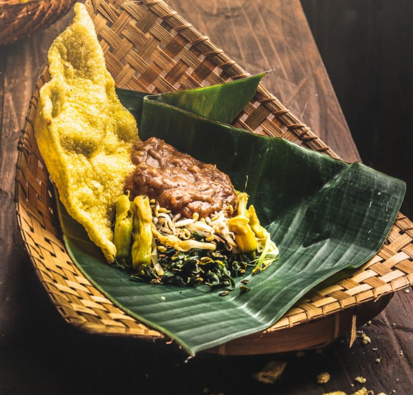

You can find Semanggi in here!!!
Kampung Semanggi
Location : Jalan Sawo Gang IV Bringin East Java
Open : 09.00 - 17.00
Closed during holiday
Let me introduce you to
Semanggi, or Pecel Semanggi, is a distinctive traditional dish originating from Surabaya, East Java. It is made from steamed semanggi leaves served with a deliciously spicy sauce. This dish is also typically accompanied by bean sprouts, water spinach, and crispy kerupuk puli (rice crackers). What makes Semanggi truly unique is its signature sauce, which is uniquely crafted from sweet potatoes, offering distinct ingredients and flavors unlike any other.

Location : Jalan Sawo Gang IV Bringin East Java
Open : 09.00 - 17.00
Closed during holiday